Mapy povrchů Berlína, Hamburku a Cách: bez mapy města (nahoře, modře) a s ní (dole, červeně)
Řez zleva (A) doprava (B), ±10 m podél ulice, 10 px = 1 m. Silné čáry = okraje vozovky, tenké = ostatní hranice, žlutá = střed řezu, * = odhad. Ortofoto © GeoBasis-DE/LGB, Freie und Hansestadt Hamburg (LGV), GeoBasis-DE/NRW.
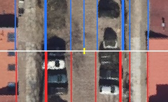
be2 · Swinemünder Straße (berlin)
bez mapy města: chodnik 5.9* · parkovani 5* · pruh 2.6* · pruh 2.6* · parkovani 5* · stromorad 1.42* · chodnik 3.58*
s mapou města: chodnik 5.85 · parkovani 5* · pruh 4.82* · pruh 4.82* · stromorad 1.87* · chodnik 3.48
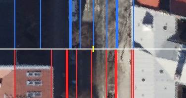
be6 · Gartenstraße (berlin)
bez mapy města: plocha 5.2* · chodnik 6* · parkovani 2* · pruh 2.7* · pruh 2.7* · parkovani 2* · chodnik 3.35*
s mapou města: plocha 7.4* · chodnik 3.05 · parkovani 2.05 · pruh 3* · pruh 3* · parkovani 1.85 · chodnik 3.2 · plocha 0.4*
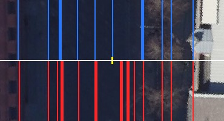
be9 · Oranienburger Straße (berlin)
bez mapy města: chodnik 4.95* · stromorad 1.95* · pruh 2.9* · pruh 2.9* · tramvaj_v_pruhu 2.87* · tramvaj_v_pruhu 4.92* · chodnik 3.26* · stromorad 1.5* · chodnik 3.64*
s mapou města: chodnik 4.75 · stromorad 1.5* · chodnik 0.7 · pruh 2.82* · pruh 2.82* · tramvaj 4.25 · pruh 1.05* · chodnik 1.1 · cyklostezka 1.5 · chodnik 3.06 · stromorad 1.5* · chodnik 3.64
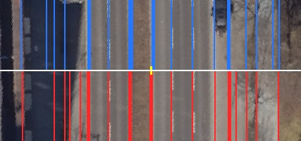
be11 · Alexanderstraße (berlin)
bez mapy města: plocha 3.65* · chodnik 1.09* · stromorad 1.5* · chodnik 3.41* · pruh 2.77* · pruh 2.9* · krajnice 0.33* · delici 3.1* · pruh 2.58* · pruh 3* · pruh 3.03* · parkovani 2* · chodnik 2.51* · stromorad 1.5* · chodnik 2.29* · nezname 0.95*
s mapou města: chodnik 4.59 · stromorad 1.5* · chodnik 0.61 · cyklostezka 1.5 · chodnik 1.15 · pruh 2.92* · pruh 2.98* · delici 3 · pruh 2.92* · pruh 3* · pruh 3.17* · parkovani 2* · chodnik 1 · cyklostezka 1.55 · stromorad 1.31* · chodnik 3.19
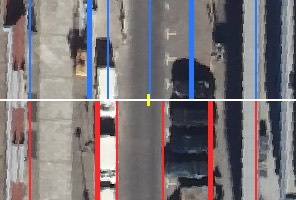
be13 · Markgrafenstraße (berlin)
bez mapy města: chodnik 5.9* · parkovani 1.87* · pruh 4.23* · pruh 4.1* · chodnik 6.45*
s mapou města: chodnik 6.7 · parkovani 2* · pruh 4.65* · pruh 4.65* · chodnik 4.55
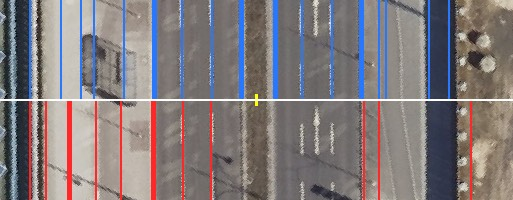
be19 · Grunerstraße (berlin)
bez mapy města: plocha 3.05* · chodnik 2* · plocha 1.35* · chodnik_kola 3* · nastupiste 3* · pruh 2.77* · pruh 3* · pruh 2.93* · delici 3.4* · pruh 2.68* · pruh 3* · pruh 2.93* · stromorad 1.76* · chodnik 0.74* · nezname 4.3* · chodnik 2*
s mapou města: plocha 1.6* · chodnik 2.3 · pruh 2.67* · pruh 2.5* · pruh 3.1* · krajnice 0.13* · chodnik 3 · zelen 2.75 · plocha 15.31 · stromorad 1.5* · plocha 9.24
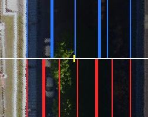
ha3 · Rosenstraße (hamburg)
bez mapy města: chodnik 4.15* · pruh 4.05* · pruh 4.05* · stromorad 1.4* · chodnik 3.9*
s mapou města: chodnik 2.75 · parkovani 2.7 · pruh 3.17* · pruh 3.17* · stromorad 2.65 · chodnik 3.1
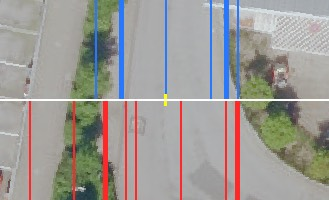
ha8 · Lagerstraße (hamburg)
bez mapy města: chodnik 2.5* · pruh 4.5* · pruh 4.5* · krajnice 1.5* · chodnik 1.2*
s mapou města: chodnik 4.4 · stromorad 3.1 · parkovani 2.05 · krajnice 1.07* · pruh 4.5* · pruh 4.5* · krajnice 1.07*
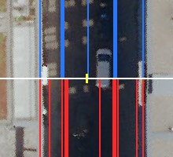
ha18 · Alexanderstraße (hamburg)
bez mapy města: chodnik 2.8* · pruh 3.35* · pruh 3.35* · chodnik_kola 3.6*
s mapou města: plocha 1.25* · chodnik 1.55 · zelen 0.5 · pruh 4.35* · parkovani 1.8 · zelen 0.5 · chodnik_kola 2.4 · plocha 0.75*
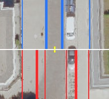
ha25 · Hahntrapp (hamburg)
bez mapy města: chodnik 4.8* · pruh 3.2* · chodnik 5.6*
s mapou města: chodnik 2.9 · parkovani 1.7 · pruh 4.27* · parkovani 1.98 · chodnik 2.6
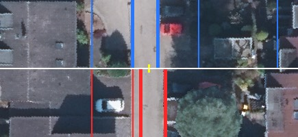
aa5 · Purweider Winkel (aachen)
bez mapy města: chodnik 5.9* · pruh 3.7* · chodnik 6* · zelen 11.45*
s mapou města: plocha 5.95* · chodnik 1.15 · pruh 3.55*
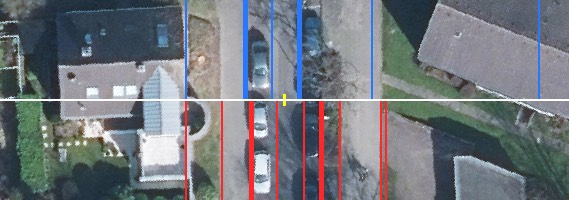
aa8 · Alkuinstraße (aachen)
bez mapy města: chodnik 5.95* · pruh 2.7* · pruh 2.7* · chodnik 7.25* · zelen 16.7*
s mapou města: plocha 3.6* · chodnik 2.9 · pruh 2.65* · pruh 2.66* · krajnice 1.73* · zelen 1.9 · chodnik 4.05 · plocha 0.55*
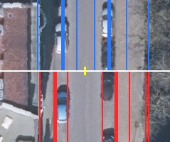
aa9 · Brabantstraße (aachen)
bez mapy města: chodnik 3.55* · parkovani 2* · pruh 2.5* · parkovani 2* · chodnik 2.5* · nezname 3.05*
s mapou města: chodnik 2.1 · parkovani 1.85 · pruh 4.9* · parkovani 1.85 · cyklostezka 1.95 · chodnik 2.3 · nezname 0.35*
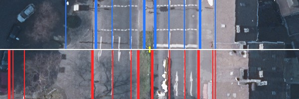
aa12 · Adalbertsteinweg (aachen)
bez mapy města: chodnik 6* · pruh 3.36* · pruh 3.7* · pruh 2.63* · delici 2.2* · bus 2.87* · pruh 3.1* · pruh 3.03* · chodnik 3.15*
s mapou města: chodnik 2.5 · parkovani 2 · obsluzna 6.05 · chodnik 0.8 · zelen 2.3 · chodnik 13.6 · pruh 4.08* · pruh 3.7* · krajnice 1.43* · delici 2.85 · bus 3.42* · pruh 3.1* · pruh 2.72* · chodnik 2.95 · plocha 0.5*
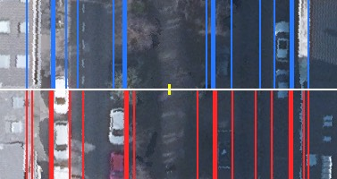
aa16 · Oppenhoffallee (aachen)
bez mapy města: chodnik 2.95* · cyklopruh 1.5* · krajnice 1.25* · pruh 4* · krajnice 1.25* · stromorad 9.2* · plocha 0.7* · parkovani 2.04* · pruh 3.26* · cyklopruh 1.53* · parkovani 1.97* · chodnik 1.9*
s mapou města: plocha 0.6* · chodnik 2.1 · parkovani 2.15 · cyklopruh 1.47* · pruh 4.83* · stromorad 0.86* · plocha 7.13 · stromorad 1.91* · parkovani 2* · pruh 2.6* · cyklopruh 1.75* · parkovani 2.1 · chodnik 1.5 · plocha 0.55*